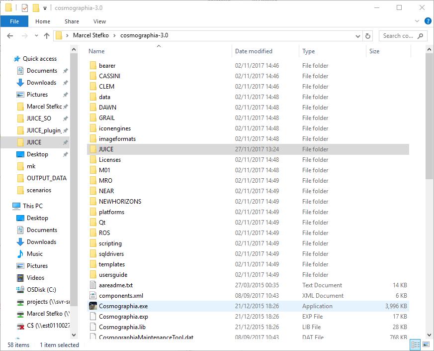
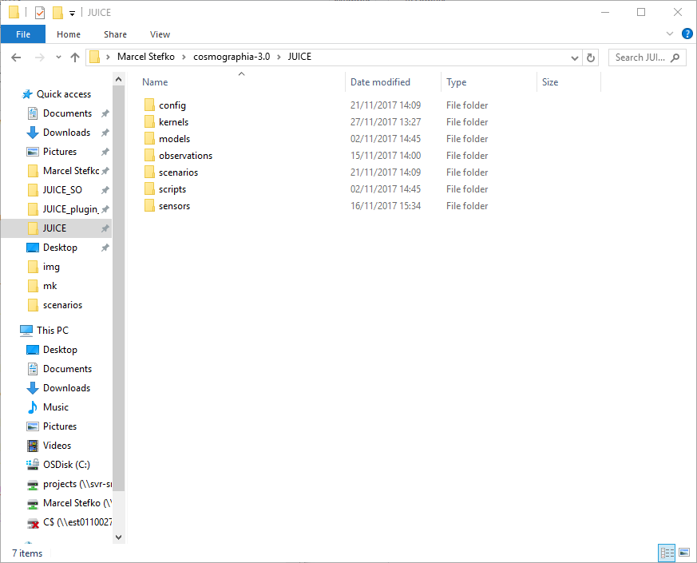
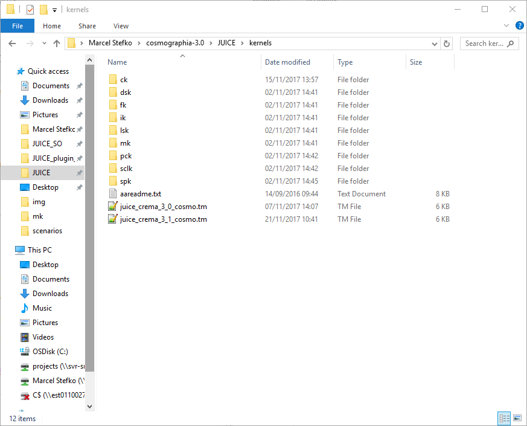

This plugin allows you to import MAPPS data (attitude + instrument operation) as a Cosmographia scenario.
This plugin requires python2.7 with packages pyqt5, jdcal, and simplejson installed.
If you use Anaconda, you can install using these steps:
JUICE_plugin_win.conda env create (This creates a new environment called juice_plugin with all
required packages and correct Python version.)activate juice_plugin (This activates the newly-created environment.)python run_plugin.py (The GUI should be displayed now.)
Fig 1: Correct installation procedure.
For subsequent runs, you need to activate juice_plugin environment every time you restart Anaconda prompt.
You need to have Spice-enhanced Cosmographia with the appropriate JUICE datafiles correctly installed (see aareadme.txt for installation instructions).
PATH_VALUES entry in the metakernels to correct path, e.g. '<cosmographia_root>\JUICE\kernels'
<cosmographia_root> is the folder in which your Cosmographia.exe is located, e.g. C:\cosmographia-3.0\. This folder
should also be included in your system's PATH environment variable (this is done automatically
when Cosmographia is installed, if you get a warning about the PATH variable while using this program,
this google search might help you fix
the issue).JUICE/config/, modify spice_JUICE_crema_3_1.json by pointing the "spiceKernels" entry to the correct CREMA3.2 metakernel in ../kernels/ or ../kernels/mk/ directory. Save this new file as spice_JUICE_crema_3_2.json.JUICE/scenarios/, modify load_JUICE_crema_3_1_001.json by changing the first "require" entry to "../config/spice_JUICE_crema_3_2.json" (i.e. point to the file you just created). Save as load_JUICE_crema_3_2_001.json.
Fig 2: Correct placement of JUICE datafiles inside Cosmographia root directory.

Fig 3: Correct placement of JUICE SPICE folders inside Cosmographia/JUICE directory.

Fig 4: Correct placement of JUICE SPICE kernels inside Cosmographia/JUICE/kernels directory.

Fig 5: Main plugin GUI.
The program requires input of 3 data files:
MAPPS Attitude Data: This is a MAPPS .csv file created using
MAPPS -> Data -> Generate Datapack -> Quaternions+AttitudeMatrix. It contains
required quaternion data for generating a new CK kernel.MAPPS Timeline Dump: This is a MAPPS .asc file created using
MAPPS -> Data -> Dump Timeline Data.... It contains information about instrument
activity.Cosmographia Scenario File: This is a .json file that you would normally use to load
a JUICE Cosmographia scenario without any observations (i.e. only to display JUICE's trajectory).
This file should reside in <cosmographia_root>/JUICE/scenarios/ folder if you followed kernel installation
instructions correctly.
You can customize which instrument operations will be displayed using the checkboxes.
Target body specifies which body is used to display instrument ground tracks. For moon flybys,
use the appropriate moon.Observation decay time [min] specifies time duration for which
the ground track of an observation
is still displayed, after the observation's end time.To generate a scenario, click Generate files!. A <cosmographia_root/JUICE/mapps_output_yyyymmdd_HHMMSS/
folder will be created. Inside this folder all necessary files are stored. The original
files are not modified by this script.
To launch this scenario, there are three options:
Close program and launch scenario option in the dialog that appears after
the scenario is generated (this runs the run_scenario.bat script in the output folder). This option will only
appear if all data files are correctly structured within the <cosmographia_root>/JUICE folder.run_scenario.bat script in the output folder manually. This automatically finds JUICE and sets time of first observation.Cosmographia -> File -> Open Catalog..., and open the <cosmographia_root/JUICE/mapps_output_yyyymmdd_HHMMSS/LOAD_SCENARIO.json
file. You need to set the time of interest and find JUICE manually, using Cosmographia's controls.
Fig 6: Cosmographia with running generated scenario.
Some settings can be adjusted in juice_plugin.ini in the [itl] section:
- mode_sensors: This dictionary defines which instrument modes are considered "on" states, and which
sensor FOV is associated with each mode. Each entry has the format "instrument_mode": "sensor_fov_name".
- instruments: This is a list of instrument names which become selectable in the GUI.
- sensor_colors: This dictionary defines for each instrument an RGB color which is used to display
sensor FOVs and ground tracks.
SCIENCE_20pct.Error loading kernel: <kernel path>...
PATH_VALUES variable in the given kernel is correctly set.